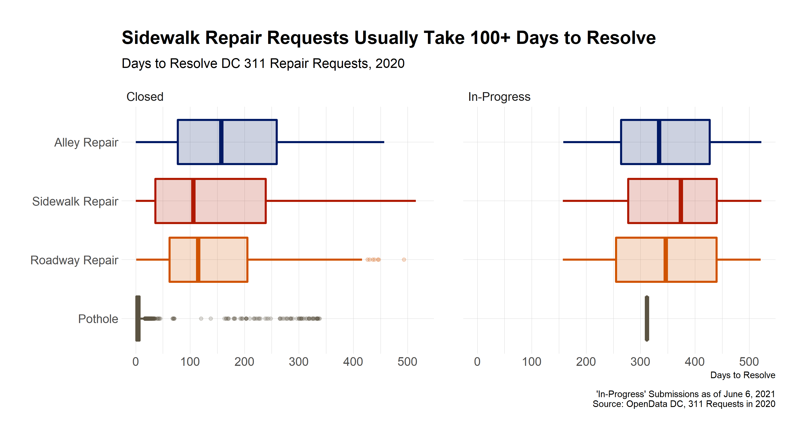
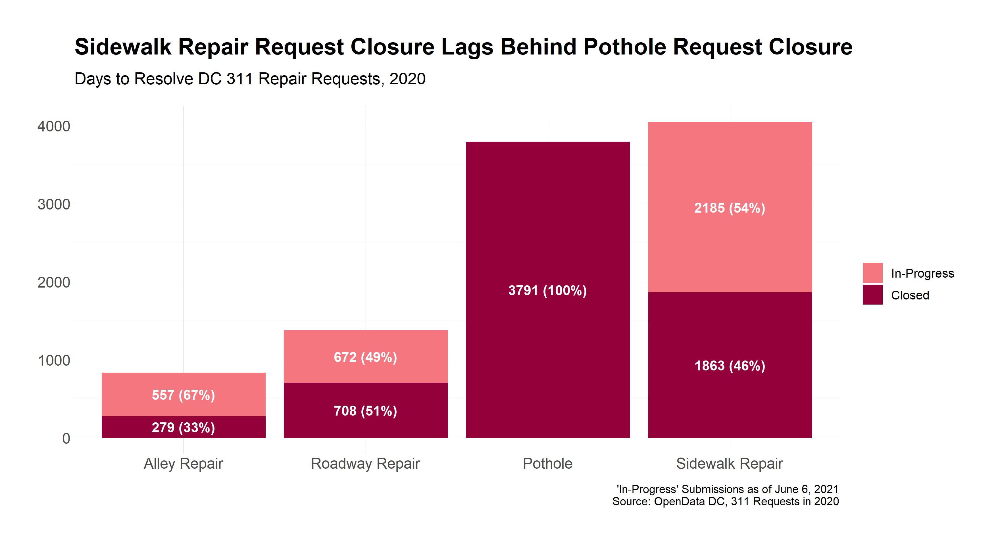

The DC’s 311 City Service portal allows District residents and visitors to submit requests for government services. DC then provides data for all 311 requests publicly via its OpenData Portal. Using this data, I can summarize how long it takes DC’s Department of Transportation (DDOT) to respond to repair requests.
Specifically, I look at how long it takes DDOT to respond to alleyway repairs, roadway repairs, potholes, and sidewalk repairs using data from 2020. DDOT defines each of these types of repairs in more detail here.
Among other fields, the data includes the following:
First, I summarize the number and percentage of each type of request and whether it was closed. The graph below shows that, of the sidewalk repair requests made in 2020, less than half were designated closed as of the date this post was written. Compare this to 100% of all pothole requests in 2020 having been closed. Note that the process of sidewalk repair requires an investigation, and, in the absence of findings, requests are seemingly marked as “In-Progress” indefinitely.

So how long do sidewalk repair requests take to complete? When looking at the data from 2020, we see that, of the requests that were completed, more than half of them took over 100 days to complete. A quarter of these requests took even longer – more than 250 days to be permanently resolved.
According to their website, “DDOT’s standard is to resolve sidewalk repair requests within 25 business days of the time they are reported.” For pothole repair this time is stated as only three days.
| Service | Median | Average | Count |
|---|---|---|---|
| Alley Repair | 157.0 days | 169 days | 279 |
| Pothole | 3.0 days | 10 days | 3791 |
| Roadway Repair | 114.5 days | 140 days | 708 |
| Sidewalk Repair | 106.0 days | 147 days | 1863 |
Table 1 shows a majority of pothole requests are meeting DDOT’s standard of 72 hours to close. However, most sidewalk repair requests have taken over four times longer than the 25 days DDOT has allotted.
The discrepancies shown here are the reason why citizen initiatives such as the recent Sidewalk Palooza are organized. With greater awareness and analysis of these infrastructure problems, perhaps DDOT can take further steps to address them.
Code for this analysis available on Github.